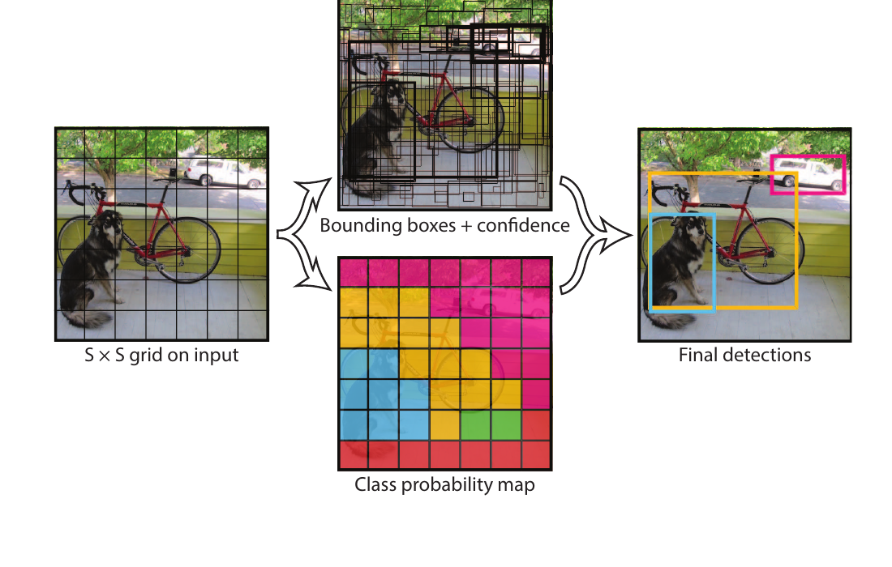
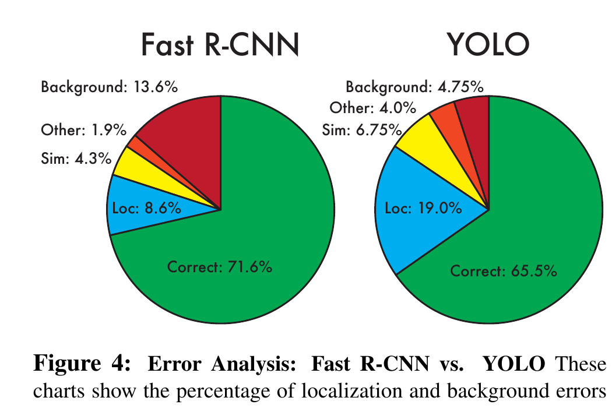

Computer vision · object detection · CVPR 2016
See the whole scene. Report every object.
YOLO turns object detection from a chain of region-by-region decisions into one spatial prediction problem. Follow one object from image coordinates to a grid-cell report, then see what this fast decision loses.
You Only Look Once: Unified, Real-Time Object Detection
Joseph Redmon · Santosh Divvala · Ross Girshick · Ali Farhadi
Guiding question
How can one network say both what is in an image and where it is, in a single pass?
1 · Prerequisite bridge
A classifier answers “what?” A detector must also answer “where?”
An image classifier can report “there is a bicycle.” Detection has a harder contract: report a bicycle, a dog, and a car, each with a rectangle around it. The number of objects changes from image to image, and two objects may be close together.
Analogy: a stadium usher with one overhead map. Divide the map into seating blocks. Each block submits a small report: “I may own an object; here is its rectangle and confidence; here are my class beliefs.” One office reads all reports together and removes duplicates. YOLO asks a network to make that complete set of reports in one look at the full image.
The analogy has a boundary: the blocks are not independent human observers. A convolutional network processes the complete image, so each report can use broader visual context. The grid is the output structure that assigns responsibility, not a claim that vision is only local.
2 · Name the report before reading it
Each cell owns a compact detection ledger.
For PASCAL VOC, the paper divides a 448 × 448 input into an S = 7 by 7 grid. Each cell predicts B = 2 candidate boxes and one shared distribution over C = 20 classes.
| Item | Shape in the paper | Meaning |
|---|---|---|
| S × S | 7 × 7 cells | Where the final prediction reports are organized. |
| B boxes | 2 per cell | Each has x, y, w, h, and confidence. |
| x, y | Two numbers in [0, 1] | Box centre, relative to the cell that reports it. |
| w, h | Two numbers in [0, 1] | Box width and height, relative to the whole 448 × 448 image. |
| confidence | One number per box | Pr(object) × IoU: object presence multiplied by the predicted box's overlap with truth. |
| Pr(class | object) | 20 numbers per cell | Conditional class beliefs, shared by that cell's two candidate boxes. |
A useful distinction: class belief is not yet the final class score. At test time, YOLO multiplies a box's confidence by Pr(class | object). That score combines “is it this class?” with “does this rectangle fit?”
3 · The causal move
Give every object centre one reporting cell.
Earlier detectors often generated regions, classified them, and refined their coordinates in separate stages. YOLO makes one network predict all cell reports simultaneously. During training, the grid cell containing an object's centre is responsible for that object; of that cell's two box predictors, the one with the highest current IoU is responsible for its coordinates.
Lesson diagram

Original paper Figure 2 · PDF p. 2
The historical YOLO v1 network uses 24 convolutional layers followed by 2 fully connected layers. It first extracts image features, then produces the 7 × 7 × 30 report. “One look” means one evaluation of that network over the full image—not that the computation has no layers or no global context.
4 · Work the report in both directions
Encode an object, then decode the answer back into pixels.
Trace A · One cell's geometry and score
Illustrative calculation, not a paper example. Suppose a 448 × 448 image contains an object centred at (160, 214) pixels, with width 96 and height 128. A grid cell is 64 pixels wide and high.
cell origin = (128, 192)
target = (x, y, w, h) = ((160−128)/64, (214−192)/64, 96/448, 128/448)
= (0.500, 0.344, 0.214, 0.286)
If a candidate box reports confidence 0.60 and the cell's belief is Pr(cat | object) = 0.70, its cat-specific score is 0.70 × 0.60 = 0.42. Decode the geometry: xpx = (2 + .500) × 64 = 160 and ypx ≈ 214; width and height recover to about 96 × 128 pixels. The tensor numbers are a compact way to state one rectangle and one confidence.
Trace B · Why coordinate loss is weighted
YOLO trains with a sum-squared-error objective. It gives coordinate terms extra weight, λcoord = 5, and uses square roots for widths and heights. With the target above and a prediction (.450, .400, .250, .250), the two coordinate pieces are:
size: 5[(√.250−√.214)² + (√.250−√.286)²] ≈ 0.0131
Taking square roots tempers the influence of a given width/height error on large boxes. The full paper loss also contains confidence, no-object, and class terms; this fragment isolates the coordinate choice. It is a surrogate for detection quality, not mAP itself.
Predict before reveal · Which cell must report an object that straddles a grid boundary?
The one cell containing the object's centre is responsible, even if much of its rectangle crosses into other cells. This gives one unambiguous owner, but it creates a bottleneck: a cell has only two boxes and one shared class distribution. That helps explain YOLO v1's difficulty with small or clustered objects.
5 · Read speed and mistakes together
YOLO trades proposal machinery for a single global report.
Table 1 reports PASCAL VOC 2007 results for real-time systems. The relevant comparison is a trade-off: Fast YOLO reaches 155 FPS but lower mAP, while the larger YOLO reaches 63.4 mAP at 45 FPS. These figures describe the paper's listed training data and evaluation setup, not a universal modern detector ranking.
| Real-time detector | Training data | mAP | FPS |
|---|---|---|---|
| 100Hz DPM | 2007 | 16.0 | 100 |
| 30Hz DPM | 2007 | 26.1 | 30 |
| Fast YOLO | 2007 + 2012 | 52.7 | 155 |
| YOLO | 2007 + 2012 | 63.4 | 45 |
Source: paper Table 1, PDF p. 6. mAP is mean average precision; FPS is frames per second. This small transcription keeps the paper's four real-time rows and omits slower systems because the teaching question here is the speed–accuracy trade-off.

Original paper Figure 4 · PDF p. 6
The evidence boundary: YOLO v1's one-pass framing supports fast, end-to-end detection on the paper's PASCAL VOC experiments. It did not establish that a fixed 7 × 7 grid is best for every image. The authors explicitly identify localization, small/grouped objects, unusual aspect ratios, and the mismatch between squared error and IoU as limitations.
6 · Misconception clinic
Keep the promise and the constraint together.
“Confidence is just the probability of a class.”
No. Confidence is Pr(object) × IoU. The class terms are conditional probabilities. Their product gives a class-specific confidence that also reflects box fit.
“Two boxes per cell means two classes per cell.”
No. The cell emits two box-and-confidence candidates but one shared distribution over the 20 classes in the PASCAL VOC setup.
“One pass means each prediction can see only one small patch.”
No. YOLO evaluates the entire image with a convolutional network. The grid structures the final reports; it does not make the earlier computation independent per cell.
“Non-max suppression makes the detector find more objects.”
No. It removes overlapping duplicate reports after scoring. It cannot create a candidate that the fixed prediction grid failed to produce.
7 · Active recall
Reconstruct the detection contract.
Why is detection harder than image classification?
It must return an unknown-sized set of class-and-location pairs, not only a label for the whole image.
What does 7 × 7 × 30 mean in YOLO's PASCAL VOC configuration?
There are 49 grid cells. Each emits two sets of five box values plus 20 conditional class probabilities: 2 × 5 + 20 = 30 values per cell.
Which cell is responsible for a ground-truth object?
The cell containing the object's centre. Of its two predicted boxes, the one with highest current IoU becomes responsible for the coordinate prediction during training.
How is a class-specific score formed at test time?
Multiply Pr(class | object) by the individual box confidence, Pr(object) × IoU.
State one strength and one limitation with correct scope.
On the paper's PASCAL VOC setup, YOLO runs at 45 FPS with 63.4 mAP and makes fewer background errors than Fast R-CNN in its analysed detections. It has more localization errors and struggles with small or clustered objects because of its coarse grid and limited reports per cell.
8 · Connect it to your mental map
YOLO changes the output contract of visual learning.
ResNet
ResNet makes it easier to optimize a deep visual feature extractor. YOLO adds a detection head: its output is not one image label, but spatial hypotheses with geometry, confidence, and class meaning.
SimCLR
SimCLR learns useful visual representations from paired views. YOLO uses supervised box and class targets to force a representation to say where an object is, not merely which images resemble one another.
Transformers
Attention learns input-dependent routes between tokens. YOLO v1 instead assigns fixed grid-cell responsibility from an object's centre; its limitation makes clear why later detectors explored more flexible prediction structures.
DQN
A DQN forward pass emits a score per available action. A YOLO forward pass emits a spatially structured set of box hypotheses. Both turn one observation into many comparable candidate values, but the candidates mean very different things.
9 · Takeaway
One image in; a coordinated ledger of object reports out.
YOLO's contribution is not merely speed. It commits to a single, shared output language in which every grid cell can state box geometry, objectness, and class evidence at once. That makes detection end-to-end and fast—but the same fixed reporting structure explains its localization and crowded-object failures.